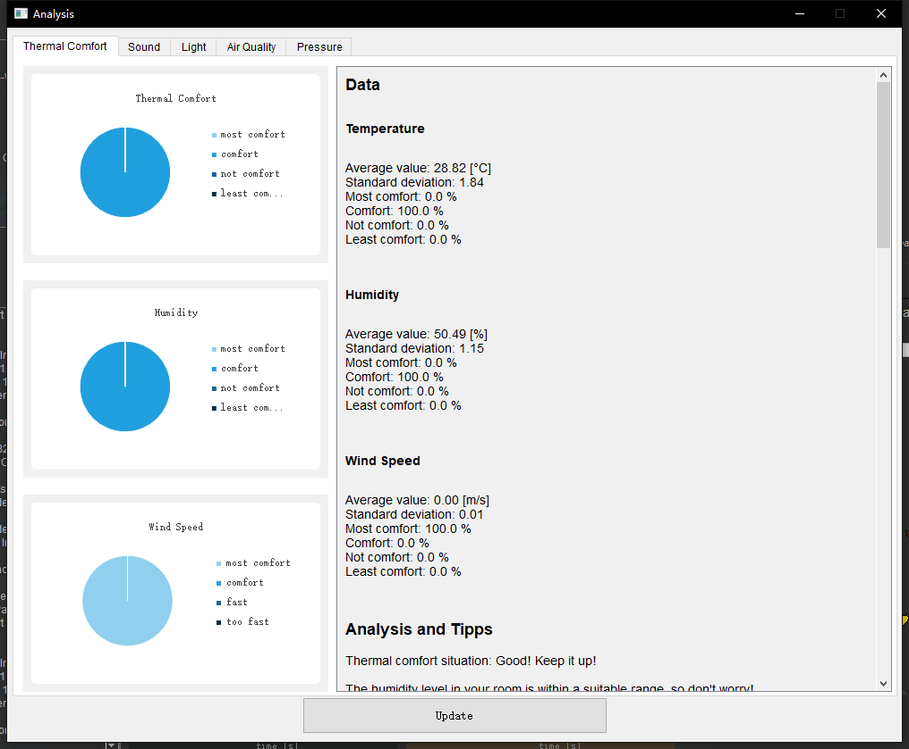

A screen (1) that can be controlled via the touch screen to display the predicted comfort, sensor data, comfort indexes and QR code for the manualEin Bildschirm (1), der über den Touchscreen gesteuert werden kann, um den vorhergesagten Komfort, Sensordaten, die Komfortindexe und QR-Code für den Handbuch anzuzeigen可以使用触屏操控的屏幕 (1)，查看预测的舒适度、传感器数据、舒适度指数以及说明书的二维码
Sleep ModeSchlafmodus睡眠模式
Push the button at the right side (4) for 2 - 3 seconds OR use any RFID card (2) OR use any smartphone that supports NFC function (2), the Touch Display will be disabled after few seconds and the interval between data measurements will be longer: 10s → 60s, but other processes still run in backend.
The left one of the blue LEDs will turn on for short time by using RFID modul to activate sleep mode and the right one by using button. (3)Drücken Sie die Taste auf der rechten Seite (4) für 2 - 3 Sekunden ODER verwenden Sie eine beliebige RFID-Karte (2) ODER verwenden Sie ein beliebiges Smartphone, das die NFC-Funktion unterstützt (2), wird das Touch-Display nach einigen Sekunden deaktiviert und das Intervall zwischen den Datenmessungen wird länger: 10s → 60s, aber andere Prozesse laufen noch im Backend.
Die linke der blauen LEDs schaltet sich für kurze Zeit ein, wenn Sie das RFID-Modul verwenden, um den Schlafmodus zu aktivieren, und die rechte, wenn Sie die Taste verwenden. (3)按下右侧的按钮 (4) 2-3秒或使用任何RFID卡 (2) 或使用任何支持NFC功能的智能手机 (2)，几秒钟后触摸显示屏将黑屏进入睡眠模式，同时传感器测量数据的间隔将变得更长：从10秒变为60秒，而其他进程仍运行在后台。
As shown in the figure below, after installing the window sensor (5) to the window, the device will automatically monitor whether the window is open or notWie in der Abbildung unten dargestellt, überwacht das Gerät nach der Installation des Fenstersensors (5) am Fenster automatisch, ob das Fenster geöffnet ist oder nicht如下图所示，将窗户传感器 (5) 安装到窗户上之后，设备就会自动监测窗户是否开启
SoftwareSoftware软件应用
Getting StartedErste Schritte入门指南
Extract the "IEQMessbox_v0.1.6.zip" file to any location, open the "bin" folder and double-click the "__RUN__.bat" file to run the program.
(Optional) You can also right-click the "__RUN__.bat" file to create a shortcut and copy it to your desktop to start the application quickly. When creating the shortcut, you can set the icon, which is located in "IEQMessbox_v0.1.6\bin\icons\logo.ico".Entpacken Sie die Datei "IEQMessbox_v0.1.6.zip" an einen beliebigen Ort, öffnen Sie den Ordner "bin" und doppelklicken Sie auf die Datei "__RUN__.bat", um das Programm zu starten.
(Optional) Sie können auch mit der rechten Maustaste auf die "__RUN__.bat"-Datei klicken, um eine Verknüpfung zu erstellen und diese auf den Desktop zu kopieren, um die Applikation schnell zu starten. Beim Erstellen der Verknüpfung können Sie das Symbol festlegen, das sich unter "IEQMessbox_v0.1.6\bin\icons\logo.ico" befindet.将“IEQMessbox_v0.1.6.zip”文件解压到任意位置，打开bin文件夹后，双击“__RUN__.bat”文件即可运行程序。
Click the "Log" button in the upper left corner to switch to the status bar and log screen.
If the device is not connected or not recognized, you can check all the USB devices automatically scanned in the status bar, if there is no IEQMessbox (name: USB-Serial CH340, product ID: 29987), please check the device manager of windows, if it is a driver problem, please install the driver which is located under "driver" folderKlicken Sie auf die Schaltfläche "Log" in der oberen linken Ecke, um zur Statusleiste und zum Log-Bildschirm zu wechseln.
Wenn das Gerät nicht angeschlossen ist oder nicht erkannt wird, können Sie alle automatisch gescannten USB-Geräte in der Statusleiste überprüfen, wenn es keine IEQMessbox (Name: USB-Serial CH340, Produkt-ID: 29987) gibt, überprüfen Sie bitte den Gerätemanager von Windows, wenn es ein Treiberproblem ist, installieren Sie bitte den Treiber unter dem Ordner "driver".点击左上角的“日志”按钮可以切换到状态栏和日志界面。
x-axis and y-axis scaling at the same time (mouse over the line)
Drag and drop
Use the left mouse button to drag and drop
More settings (advanced)
Right-click to open the chart menu
If the sensor value exceeds the set threshold, a different color alert will be given:
Yellow: uncomfortable/unhealthy
Red: least comfortable/dangerous
Auf dem Datenbildschirm können Sie die Maus verwenden, um zu:
Vergrößern und verkleinern
x-Achse (Maus über x-Achse)
y-Achse (Maus über y-Achse)
x-Achse und y-Achse gleichzeitig (Maus über Linie)
Drag & Drop
mit der linken Maustaste Drag & Drop
Weitere Einstellungen (erweitert)
klicken Sie mit der rechten Maustaste, um das Diagramm-Menü zu öffnen
Wenn der Sensorwert den eingestellten Schwellenwert überschreitet, wird ein andersfarbiger Alarm ausgegeben:
Gelb: unbehaglich/ungesund
Rot: sehr unbehaglich/gefährlich
在数据界面可以使用鼠标来实现：
放大缩小
x轴（鼠标放在x轴上）
y轴（鼠标放在y轴上）
x轴和y轴同时缩放（鼠标放在线条上）
拖拽
使用鼠标左键来拖拽
更多设置（高级）
单击右键打开图表菜单
如果传感器数值超过了设置的阈值，会给予不同的颜色提醒：
黄色：不舒适/不健康
红色：极不舒适/危险
Predicted ComfortPrognostizierter Komfort舒适度预测
The predicted comfort level and some other information are displayed on the right side of the data screen
The Indoor Environmental Quality Index IEQI has a minimum of 0 and a maximum of 3. Where 0-1: least comfortable 1-2: uncomfortable 2-2.7: comfortable 2.7-3: most comfortableDie vorhergesagte Behaglichkeit wird auf der rechten Seite des Datenbildschirms zusammen mit einigen anderen Informationen angezeigt.
Der Indoor Environmental Quality Index IEQI hat ein Minimum von 0 und ein Maximum von 3. Wobei 0-1: sehr unbehaglich 1-2: unbehaglich 2-2.7: behaglich 2.7-3:sehr behaglich在数据界面的右侧会显示预测的舒适度以及一些其他信息。
Clicking the analysis button opens the analysis window, and the application will analyze the collected historical data and give some suggestions as well as some relevant background theoretical knowledge. Wenn Sie auf die Schaltfläche Analyse klicken, wird das Analysefenster geöffnet, in dem die Applikation die gesammelten historischen Daten analysiert und einige Empfehlungen sowie relevantes theoretisches Hintergrundwissen angibt. 点击分析按钮，可以打开分析窗口，软件会根据已收集到的历史数据进行分析，给出一些建议以及一些相关的背景理论知识。

AnimationAnimation动画窗口
As long as the program is started, you will be rewarded with a certain amount of experience (Exp) based on the real-time indoor environment.
Standard Exp: +1 Exp every time the application get data from IEQ Messbox (10s)
Bonus Exp: based on the indoor environment:
most comfortable: +2 bonus exp
comfortable: +1 bonus exp
comfortable (but bad air quality!): +0 bonus exp
uncomfortable: -1 bonus exp
least comfortable: -2 bonus exp
Don't worry, the level will not be downgraded cause exp point drops to a negative value. When exp point reaches 0, it will not continue to be deducted.
The animation window will display different content depending on your level. The higher the level, the richer the content in the animation.
Solange die Applikation gestartet ist, werden Sie mit einer bestimmten Menge an Erfahrung (Exp) basierend auf dem Echtzeit-Raumklima belohnt.
Standard Exp: +1 Exp jedes Mal, wenn die Applikation die Daten vom IEQ Messbox erhält (10s)
Keine Sorge, der Level wird nicht herabgestuft, weil Exp auf einen negativen Wert fällt. Wenn Exp 0 erreicht, wird sie nicht weiter abgezogen.
Im Animationsfenster werden je nach Level unterschiedliche Inhalte angezeigt. Je höher der Level, desto mehr Inhalt hat die Animation.
只要程序启动，用户就会根据实时的室内环境获得一定的经验（Exp）的奖励。